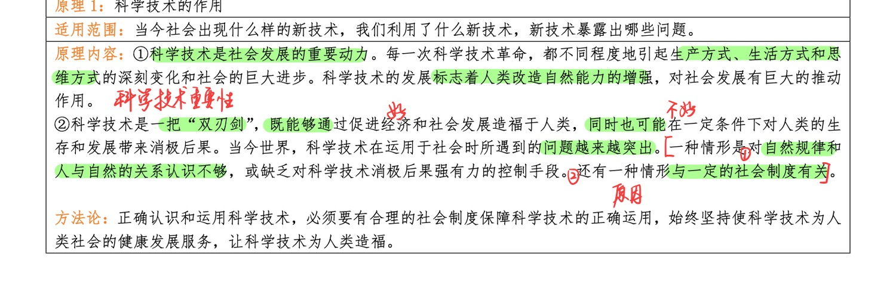

1题单选
“十五五时期”在基本实现社会主义现代化进程中具有承前启后的重要地位。习近平总书记在《关于（中共中央关于制定国民经济和社会发展第十五个五年规划的建议的说明》中指出：“实现社会主义现代化是一个阶梯式递进、不断发展进步”的历史过程，需要不懈努力、持续奋斗。“阶梯式递进、不断发展进步”的过程是一个（）①前进性与曲折性相统一的过程②规律性与能动性③连续性与非连续性④直线性与循环性
A. ①②③
B. ①②④
C. ①③④
D. ②③④
从哪里答：仅第(2)问可对应带背：科学技术是第一生产力，数字技术通过提高劳动生产率、改造传统产业、催生新产业新业态推动生产力发展；第(1)问资本技术构成与价值构成的关系，带背讲义未覆盖。
结合材料回答问题：材料1：资本技术构成的这一变化，即生产资料的量比推动它的劳动力的量相对增长，又反映在资本的价值构成上，即资本价值的不变组成部分靠减少它的可变组成部分而增加。例如，有一笔资本，按百分比计算，起初50%投在生产资料上，50%投在劳动力上。后来随着劳动生产率的发展，80%放在生产资料上，20%放在劳动力上，等等。资本的不变部分比可变部分日益相对增长的这一规律，在每一步上都由商品价格的比较分析所证实，不管我们比较的是同一国家的不同经济时代，还是同一时代的不同国家。—摘自《马克思恩格斯文集（第五卷）》材料2：生产力是结构复杂的系统，其基本要素包括劳动资料、劳动对象和劳动者。科学技术是生产力的重要因素，以数字技术为核心的新兴技术和先进生产力，已经像毛细血管一样渗透到我们生产生活的方方面面。2024年我国数字经济核心产业增加值占GDP 比重达到10%左右，人工智能专利在全球的占比达到60已经成次全球人工智能专利的最大拥有国，数字经济规模连续多年位居全球第二，已经成汐我国经济增长的主要引擎之一。数字技术正以前所未有的深度改变着我们的生活：指尖轻点，无人机在短短几分钟内，将数公里外的热咖啡精准送达；沉浸式智能健身器材将“古墓迷踪”“迷失戈壁”“无尽森林”等虚拟场景融入运动，让锻炼充满乐趣；各类人工智能助学助研工具我们量身定制学习方案，精准定位知识薄弱点，助力学生学习。—摘编自《大学生思想热点面对面（2025年版）》（1）说明资本的技术构成与资本价值构成的内在联系及发展趋势。（5分）（2）运用科学技术是第一生产力的观点，说明以数字技术为核心的新兴技术如何推动生产力的发展。（5分）

注：第(2)问已适配；第(1)问资本构成带背未覆盖。
暂无对应带背讲义内容
从哪里答：第(1)问用马克思主义中国化的第一次飞跃（新民主主义革命道路）和社会主义建设道路的探索，说明以经济建设为中心是历史经验的总结。第(2)问用中国式现代化的五个中国特色，说明其对马克思主义的丰富和发展。
结合材料回答问题：材料1：1945年4月，毛泽东在《记联合政府》中指出“在新民主主义的政治条件获得之后，中国人民及其政府必须采取切实的步骤，在若干年内逐步地建立重工业和轻工业，使中国由农业国家变为工业国”“中国工人阶级的任务，不但是为着建立新民主主义的国家而斗争，而是着中国的工业化和农业近代化而斗争”。—自摘自邓小平文选第二卷材料2：1980年1月，邓小平在中共中央召集的干部会议上题为《目前的形势和任务》的讲话中指出：“我们要在本世纪实现四个现代化、现代化建设的任务是多方面的，各个方面需要综合平衡、不单打一。但是说到最后，还要把经济建设当作中心，离开了经济建设这个中心，就有丧失物质基础的危险，其他一切任务都要服从这个中心，围绕这个中心，决不能干扰它、冲击它。—摘自习近平著作选读第一卷材料3：习近平总书记在党的二十大报告《高举中国特色社会主义伟大旗帜，沟全面建设社会主义现代化国家而团结奋斗》中指出：中国人民和中华民族从近代以后的深重苦难走向伟大复兴的光明前景，从来就该有教科书，更该有现成的答案•马克思主义的中国篇章是中国共产党人依靠自身力量实践出来的。“中国式现代化，是中国共产党领导的社会主义现代化，既有各国现代化的共同特点，更有基于自己国情的中国特色”。“中国式现代化是人口规模巨大的现代化”“中国式现代化是全体人民共同富裕的现代化”“中国式现代化是物质文明和精神文明相协调的现代化”“中国式现代化是人与自然和谐共生的现代化”“中国式现代化是走和平发展道路的现代化”—摘自（1）结合新民主主义革命和社会主义建设道路的探索过程，说明中国共产党为什么强调以经济建设为中心的现代化建设为中心的现代建设。（5分）（2）中国式现代化的丰富内涵，如何推进了马克思主义中国化时代化？（5分）

从哪里答：第(1)问可对应精神类模板：见义勇为精神是中华传统美德和时代精神的体现，弘扬它有利于形成良好社会风尚；第(2)问法治的保障作用带背未覆盖，据材料补充。
结合材料回答问题：材料：习近平总书记强调：“一个有希望的民族不能没有英雄，一个有前途的国家不能没有先锋。”2025年7月21日，第十五届全国见义勇英雄模范表彰大会，隆重表彰了60个见义勇力英雄模范个人和群体。其中，8名个人和2个群体获“全国见义勇为英雄”称号，4名个人和10个群体获“全国见义勇汐模范”称号，被表彰的英雄模范来自各行各业。有工程师、保安、电工、军人、渔民，有人是00后，有人已经退休。据统计，党的二十大以来，全国依法依规确认见义勇为行为超过3万例，见义勇为人员近4万人，其中因见义勇牺牲人员近500人、致伤致残人员近700人。一人兴善，万人可激，我们看到向善之光、浩然正气在不断汇聚。沟弘扬正气、让善行无惧、使见义勇为者在不必蒙受损失的同时，拥有足够的正反馈需要发挥法治的力量，此民法典第一百八十三条第一百八十四条，除了规定见义勇者自身权益受侵害时的保障措施还规定“因自愿实施紧急救助行造成受助人损害的、救助人不再担民事责任”，刑法为善行义争“兜底”其中第二十条关于正当防卫的规定在法律实践中持续落到实处见义勇者撑撑腰，让施救者有底气、全国人大党委会2025年度立法工作计划将见义勇为人员奖励和保障法纳入预备审议项目，多地各部门也不断修订完善见义勇力的行为认定，奖励和保障制度，为行义举的人们提供更全面系统的支持。—摘编自《人民日报》（2025年7月25日，8月1日）、《光明日报》（2025年8月2日）（1）营造良好的社会风尚，为什么要弘扬见义勇为精神。（5分）（2）弘扬见义勇的精神，法治发挥了什么作用？（5分）

注：第(1)问已适配；第(2)问法治部分带背未覆盖。
暂无对应带背讲义内容